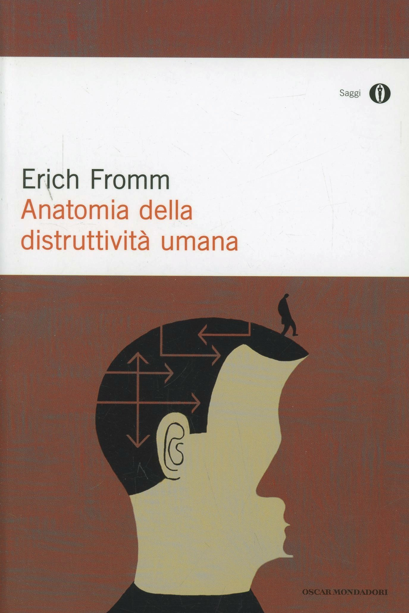

10:40 · 5 OPERE
Dallo stato di natura alla selezione naturale.
Il filo del discorso
Dr Divago confronta istinto e pulsione per discutere i limiti di una spiegazione meccanica del comportamento umano. Il percorso accosta Darwin, Freud e Fromm, soffermandosi sull’aggressività e sul peso delle condizioni sociali. Il riferimento a Hobbes introduce il modello della guerra di tutti contro tutti, che il relatore interpreta come una giustificazione della competizione e della gerarchia. Alla naturalizzazione del conflitto contrappone la possibilità di una società orientata alla cooperazione e allo sviluppo delle qualità umane.
I libri nel discorso
L’interpretazione dei sogni
Note sul riferimento
Copertina: Bollati Boringhieri · 2019
Copertina autentica dell’edizione di riferimento, controllata visivamente. Non identifica l’esemplare letto o citato nel video.
La Traumdeutung è nominata anche con il titolo italiano.

Iliade
Note sul riferimento
Copertina: Einaudi · ET Classici · 2014
Copertina autentica dell’edizione di riferimento, controllata visivamente. Non identifica l’esemplare letto o citato nel video.
Il titolo è richiamato come termine di confronto con il lessico degli antichi.

Anatomia della distruttività umana
Note sul riferimento
Copertina: Mondadori · Oscar saggi · 1992
Copertina autentica dell’edizione di riferimento, controllata visivamente. Non identifica l’esemplare letto o citato nel video.
Titolo tedesco e italiano sono annunciati nel discorso sull’aggressività.

Il capitale
Note sul riferimento
Copertina: Editori Riuniti · Libro primo
Il capitale è nominato nell’aneddoto sul rapporto fra Marx e Darwin.

De cive. Elementi filosofici sul cittadino
Note sul riferimento
Copertina: Editori Riuniti · 2019
Copertina autentica dell’edizione di riferimento, controllata visivamente. Non identifica l’esemplare letto o citato nel video.
Titolo e autore precedono la citazione sulla condizione presociale.